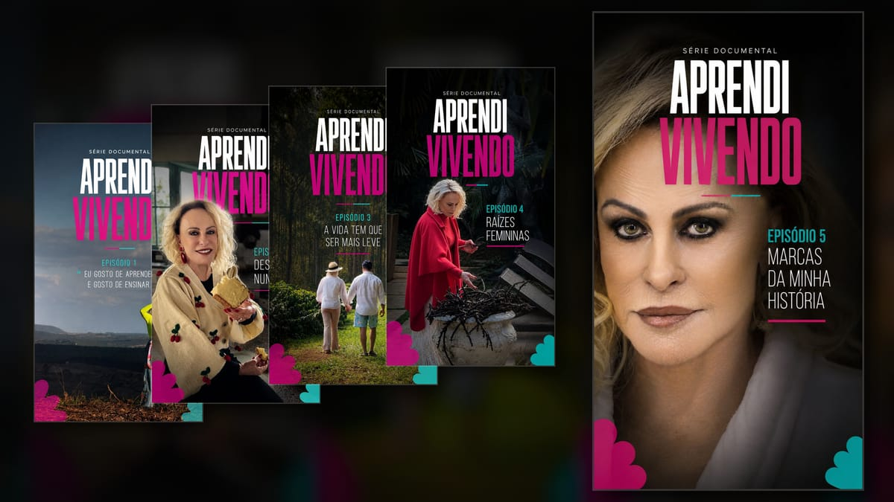
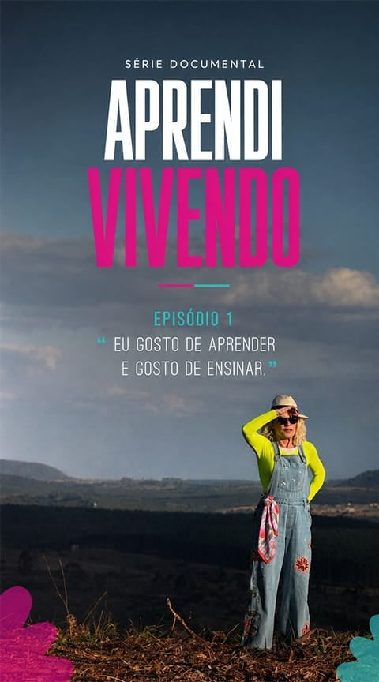
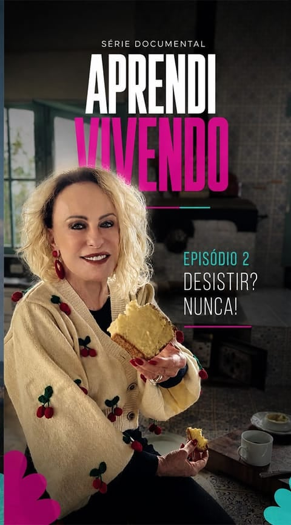
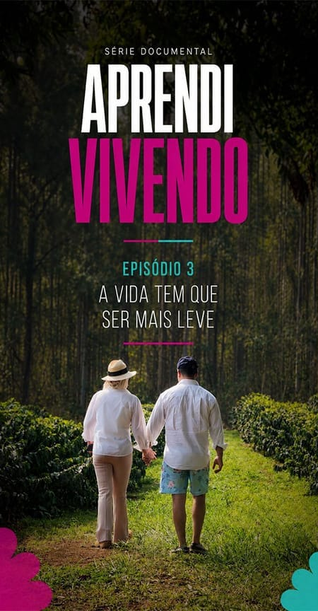
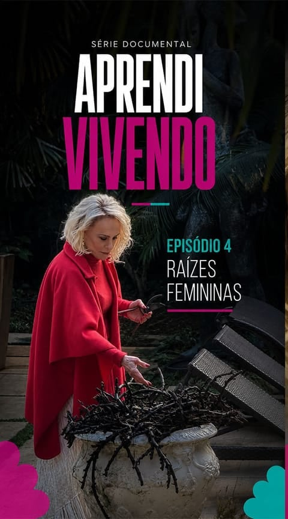
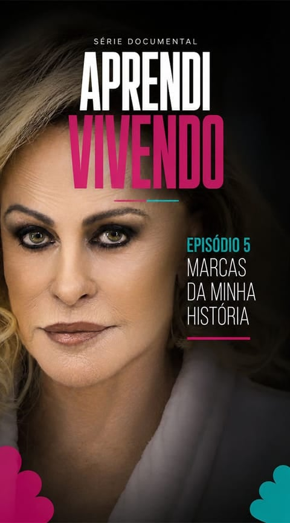

Aprendi Vivendo
Série documental · 5 episódios · 2026 · Assistência geral
Assistência geral na série documental em cinco episódios com Ana Maria Braga. Ao longo de cinco diárias, apoiei direção e produção na logística dos equipamentos, preparação das locações e fluxo operacional das gravações.
Ver os episódios ↗Sobre a série
“Aprendi Vivendo” apresenta experiências, valores e aprendizados da trajetória de Ana Maria Braga. Participei das cinco diárias que geraram material distribuído por toda a série: três jornadas de aproximadamente 14 horas em uma fazenda no interior de São Paulo e duas em horário comercial na residência da apresentadora.
-

-

-

-

-

Minha atuação
Atuei como assistência geral, respondendo diretamente ao diretor e apoiando principalmente a produção. Minha função concentrou-se na logística dos equipamentos, na preparação dos ambientes e no suporte direto ao andamento das gravações.
Realizei carga, descarga, conferência, armazenamento e deslocamento de equipamentos. Apoiei a montagem e desmontagem de tripés, iluminação, modificadores, cabos e pontos de energia, além de manter livres os percursos da câmera e ajudar a proteger os espaços utilizados.
Durante as tomadas, montei, transportei e operei o monitor de direção, mantendo a imagem disponível diretamente para o diretor. No apoio ao material gravado, copiei os cartões para computador e HD, conferi os arquivos e organizei pastas e mídias.
Apoio de set e prevenção
Nos planos em movimento, retirava objetos e reorganizava o espaço após a passagem da câmera. Também controlava circulação, ruídos e elementos fora de quadro, ajudava nos deslocamentos internos e restaurava os ambientes ao final das diárias.
Além das demandas orientadas pela equipe, antecipei necessidades do set: identifiquei e corrigi preventivamente instabilidades, desnivelamentos e problemas de montagem em luzes e tripés, acompanhei a autonomia das baterias e preparei roteiros impressos antes que fossem solicitados.
Assista à série
Os cinco episódios estão disponíveis no perfil oficial de Ana Maria Braga no Instagram.